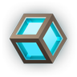
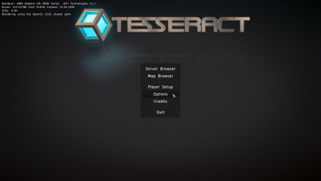
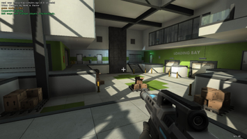
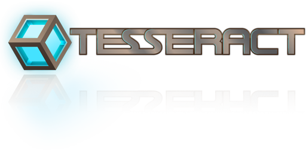

Tesseract
Dieser Artikel wurde für die folgenden Ubuntu-Versionen getestet:
Ubuntu 14.04 Trusty Tahr
Zum Verständnis dieses Artikels sind folgende Seiten hilfreich:

Tesseract  ist ein Ego-Shooter, welcher auf der Open-Source-Engine von Sauerbraten basiert. Der Fork wird ständig weiterentwickelt und bietet gegenüber der ursprünglichen Version eine verbesserte Grafik, globale Beleuchtung und HDR. Als Spielmodi stehen Capture-the-flag, Instant-Deathmode und der Bau-Modus (Multiplayer) zur Verfügung.
ist ein Ego-Shooter, welcher auf der Open-Source-Engine von Sauerbraten basiert. Der Fork wird ständig weiterentwickelt und bietet gegenüber der ursprünglichen Version eine verbesserte Grafik, globale Beleuchtung und HDR. Als Spielmodi stehen Capture-the-flag, Instant-Deathmode und der Bau-Modus (Multiplayer) zur Verfügung.
Das Spiel verfügt über einen integrierten Karteneditor.
|  |
| Menü |
|  |
| Spielszene |
Installation¶
Für die Version von der Projektseite muss man im Vorfeld die folgenden Pakete installieren [1]:
libsdl2-2.0-0
libsdl2-image-2.0-0
libsdl2-mixer-2.0-0
 mit apturl
mit apturl
Paketliste zum Kopieren:
sudo apt-get install libsdl2-2.0-0 libsdl2-image-2.0-0 libsdl2-mixer-2.0-0
sudo aptitude install libsdl2-2.0-0 libsdl2-image-2.0-0 libsdl2-mixer-2.0-0
Anschließend von der Projektseite  das Archiv, welches als .tar.xz-Datei vorliegt, für die Linuxversion herunterladen und entpacken [2] (z.B. nach ~Spiele). Hier wird der Ordner tesseract angelegt.
das Archiv, welches als .tar.xz-Datei vorliegt, für die Linuxversion herunterladen und entpacken [2] (z.B. nach ~Spiele). Hier wird der Ordner tesseract angelegt.
Das Spiel kann aus dem Installationsverzeichnis heraus über ./tesseract_unix gestartet [3] und auf Wunsch ein Menüeintrag [4] vorgenommen werden.
| Menü | |
| Menüpunkt | Beschreibung |
| "Server Browser" | Verbindung zu Spieleservern herstellen. |
| "Map Browser" | Lokales Spiel. |
| "Player Setup" | Spielerkonfiguration |
| "Options" | Grafik-, Soundeinstellungen vornehmen. |
| "Quit" | Spiel beenden. |
Startparameter¶
Beim Programmstart können zusätzliche Parameter [3] übergeben werden. Eine detaillierte Auflistung ist unter sauerbraten.org zu finden.
| Startparameter | |
| Parameter | Beschreibung |
-d | Startet den Dedicated Server |
-d1 | Startet einen Server und den Client. |
-f | Fenstermodus |
Karteneditor¶
Der Editor kann durch das betätigen der Taste E aufgerufen werden.
| Karteneditor | |
| Taste | Aktion |
| F1 | Objekt hinzufügen |
| F2 | Textur-Browser |
| F3 | Objekte |
| F4 | Material Volume |
| F5 / F6 | Speichern / Laden |
| F7 | Umgebungseinstellungen |
| F8 | Grunddaten |
| F9 | Verschiedene Einstellungen Editing |
| F10 | Tastenkürzel |
| F11 | Informationen |
Konfiguration¶
Videoaufnahme¶
Um das Spielgeschehen aus Sicht des Spielers aufzunehmen verwendet man den in der Tabelle ersichtlichen Befehl. Die Videos werden standardmäßig im Homeverzeichnis unter ~/.tesseract/movie unkomprimiert und mit einer Auflösung von 320 mal 240 als .avi-Datei gespeichert. Daher werden die Dateien sehr schnell sehr groß. Bei einer kurzen Aufnahme wird das Video mit dem angegebenen Dateinamen gespeichert. Erreicht die Aufnahme eine Größe von einem Gigabyte, wird sie unter Dateiname000.avi gespeichert und eine neue Datei erstellt, wobei die Nummerierungssequenz von 000 bis 999 geht.
| Videooptionen | |
| Befehl | Funktion |
movie Dateiname | Erstellt ein unkomprimiertes Video (320 x 240, AVI-Format) |
moview W | Die Breite des Videos auf W Pixel angepasst (0 ist die aktuelle Fensterbreite). |
movieh H | Die Höhe der Aufnahme auf H Pixel verändert (0 ist hier die Höhe des aktuellen Fensters). |
moviesound 0/1 | Hiermit lässt sich einstellen, ob auch der Sound aufgenommen werden soll, wobei 1 für die Aktivierung und 0 für die Deaktivierung auszuwählen ist. |
moviefps F | Die Framerate wird auf F FPS verändert (Standart ist 24). Mit mehr FPS (Frames per second) wirkt das Video flüssiger, aber wird auch größer. |
Tastenbelegung¶
| Tastenbelegungen | |
| Taste | Aktion |
 | Steuerung |
| 1 / 2 | Waffen wechseln |
| 9 | Ansicht ändern |
 | Waffe wechseln (Mausrad) / Nahkampf (Drücken) |
| Springen | |
 | Schießen |
 | Zoomen |
| F12 | Bildschirmfoto anfertigen. Dieses wird im Homeverzeichnis unter ~/.tesseract/screenshot/ abgelegt. |
| T | Allgemeiner Chat / Ausführung von Kommandos mit vorangestelltem / - s. Dokumentation |
| Y | Teamchat |
| E | Karte editieren |
| Esc | Menü |

Infobox¶
| Tesseract | |
| Genre: | Egoshooter |
| Sprache: | |
| Veröffentlichung: | 2014 |
| Publisher: | - |
| Systemvoraussetzungen: | - |
| Medien: | Download |
| Läuft mit: | nativ |

Links¶
Howto Tesseract Entwicklungsversion - Entwicklungsversion installieren und auf dem Stand halten
- Erstellt mit Inyoka
-
 2004 – 2017 ubuntuusers.de • Einige Rechte vorbehalten
2004 – 2017 ubuntuusers.de • Einige Rechte vorbehalten
Lizenz • Kontakt • Datenschutz • Impressum • Serverstatus -
Serverhousing gespendet von